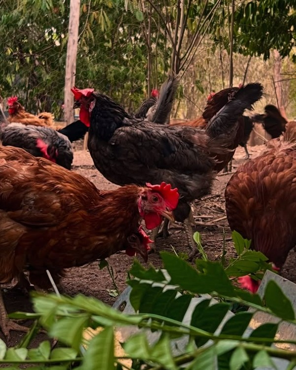
Pastoreio Livre
Manejo Natural e Liberdade
Aves criadas soltas no pasto, ciscando na terra e repousando sob a sombra fresca de árvores nativas.
Ovos e frangos caipiras legítimos da linha Granjuá e hortaliças naturais cultivadas com paciência e respeito à terra. Do nosso sítio para a sua mesa familiar em Itaberaba e região.
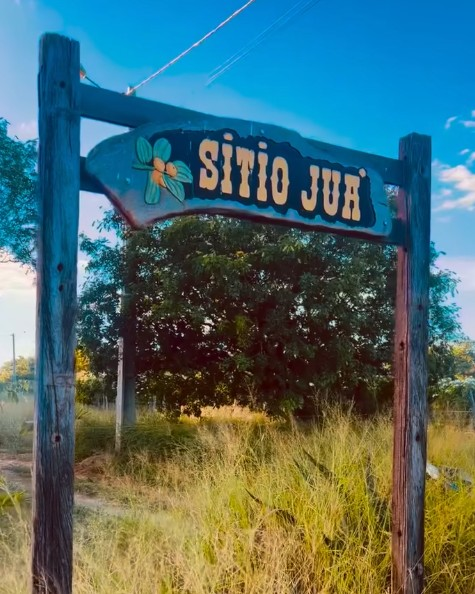
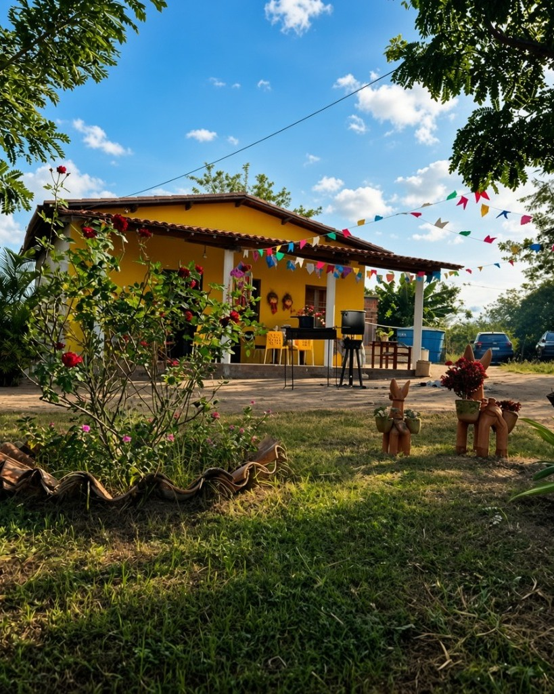
O Sítio Juá nasceu da dedicação à vida no campo e do compromisso em oferecer alimentos puros e saborosos. Localizado em Itaberaba, no interior da Bahia, nosso espaço une solo preservado, águas limpas e vegetação nativa.
Por meio da marca Granjuá, nossas galinhas e frangos são criados soltos no terreiro, com acesso livre a pasto verde, sombra de árvores e luz solar. O bem-estar das aves reflete diretamente na qualidade dos ovos, com gemas firmes de tonalidade natural e valor nutricional preservado.
As aves ciscam livremente na terra, tomam sol e convivem em ambiente calmo e sombreado.
Dieta à base de grãos selecionados, folhas frescas e pastoreio natural, sem corantes sintéticos.
Você tem a certeza da procedência do alimento consumido pela sua família.
Galinha bem cuidada dá ovo caipira de verdade, com a pureza e o sabor autêntico do campo.

Aves criadas soltas no pasto, ciscando na terra e repousando sob a sombra fresca de árvores nativas.
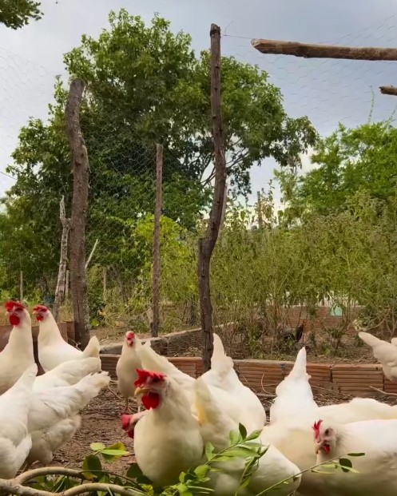
Ração balanceada acompanhada de verduras e folhas frescas colhidas aqui mesmo no sítio, sem aditivos químicos.
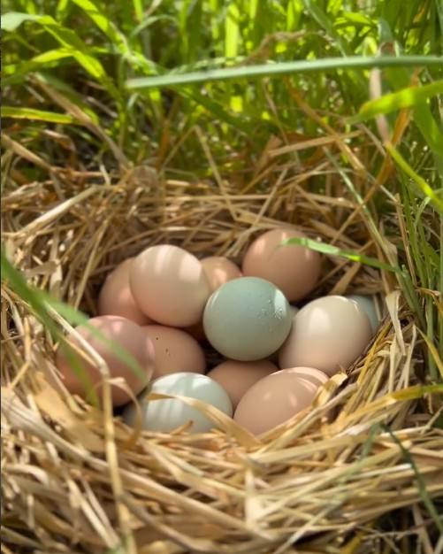
Ninhos limpos de palha e capim com coleta diária cuidadosa, garantindo gemas densas, nutritivas e sabor incomparável.
Alimentos frescos com padrão artesanal de qualidade, disponíveis para encomendas em Itaberaba.
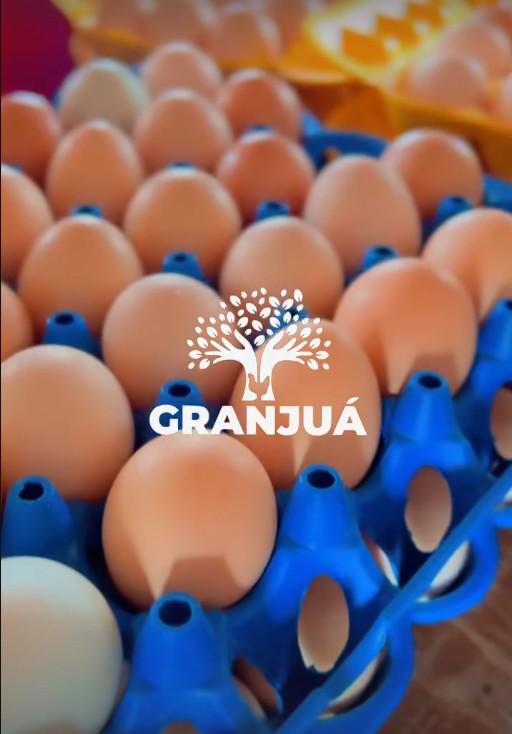
Ovos caipiras genuínos, colhidos em ninhos limpos e inspecionados individualmente. Produzidos por galinhas livres de gaiolas, com alimentação rica em vegetais frescos, resultando em gemas naturalmente densas e sabor incomparável.
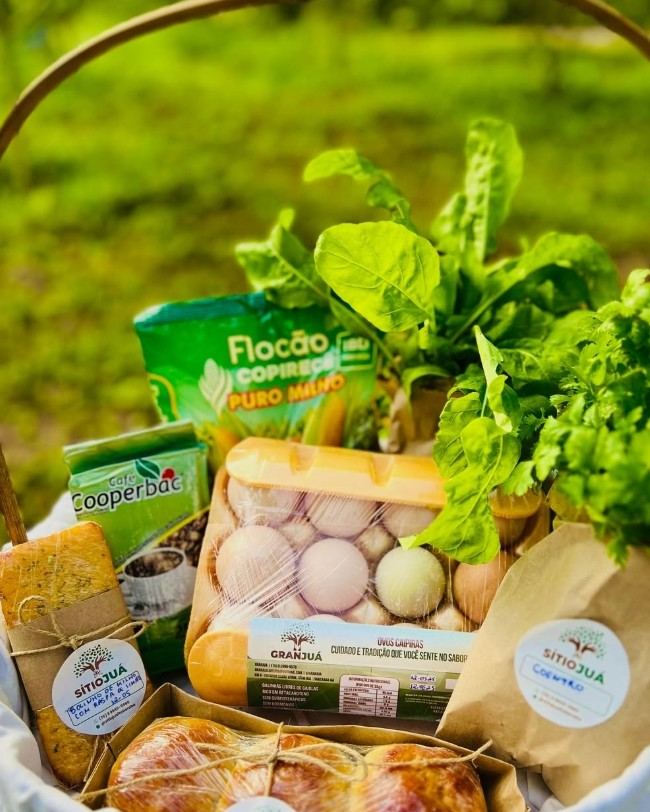
Aquele café da manhã com cara de interior, simples, gostoso e feito com afeto para quem valoriza sabor, origem e carinho em cada detalhe. Montado em uma cesta rústica e cheia de sabor da terra.
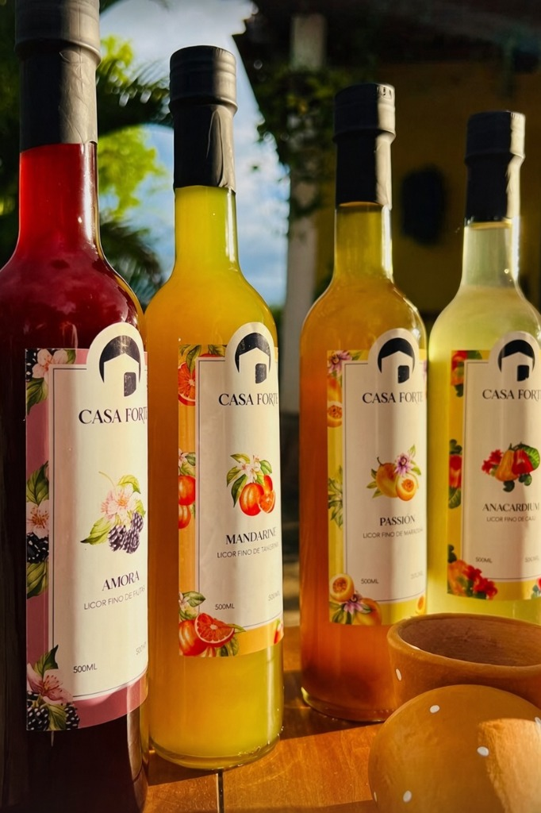
Produzidos com frutas selecionadas e infusão natural cuidadosa. Receitas exclusivas com sabores marcantes como maracujá, tangerina (mandarine), amora e caju (anacardier), ideais para degustação e ocasiões especiais.
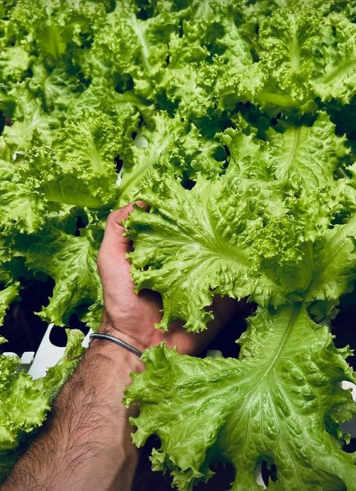
Alfaces crocantes e temperos frescos colhidos no ponto ideal. Cultivo limpo e sustentável para garantir o máximo de nutrientes e frescor direto da terra para sua mesa.
Processo direto e transparente para garantir alimentos frescos em sua casa.
Envie sua mensagem informando os produtos desejados, como ovos caipiras, licores artesanais ou hortaliças frescas.
Confirmamos a disponibilidade do lote semanal e alinhamos o endereço e horário de entrega.
Receba seus itens no capricho em Itaberaba, com opção de pagamento via Pix ou dinheiro.
Atendimento direto aos clientes de Itaberaba e região da Chapada Diamantina.
Registros reais das aves, da vegetação e do ambiente cuidado no Sítio Juá.
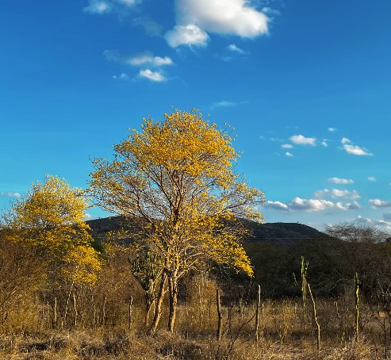
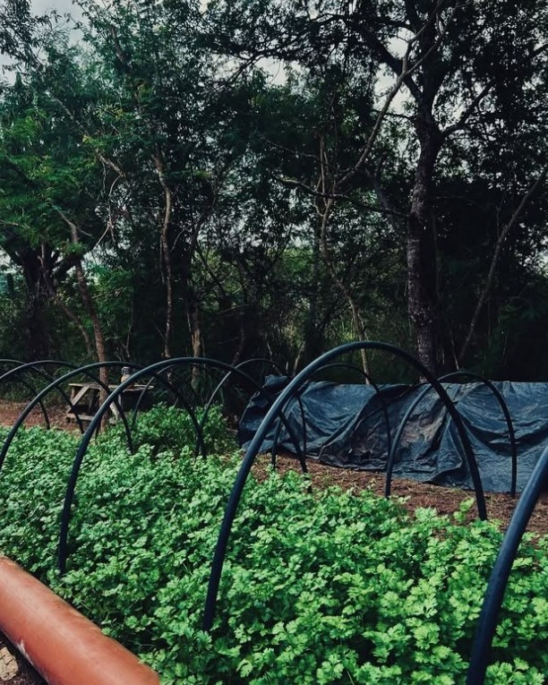
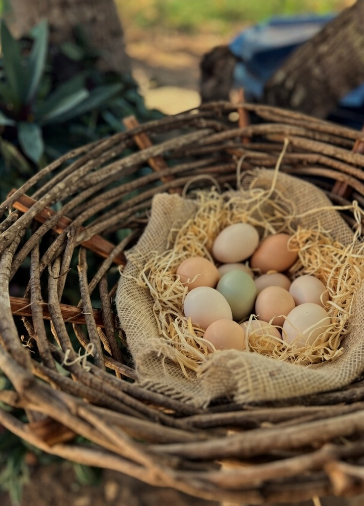